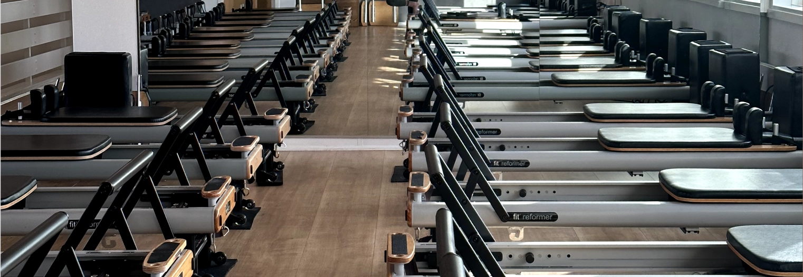
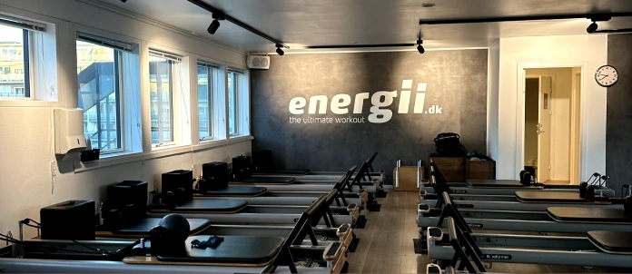
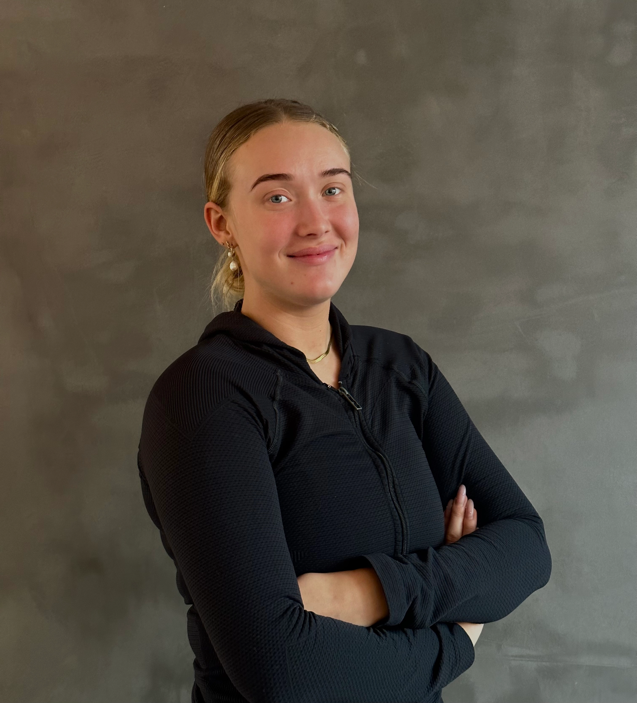
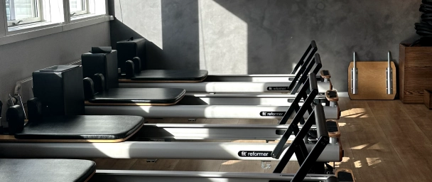
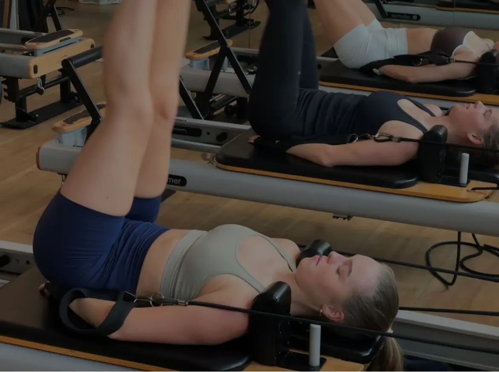
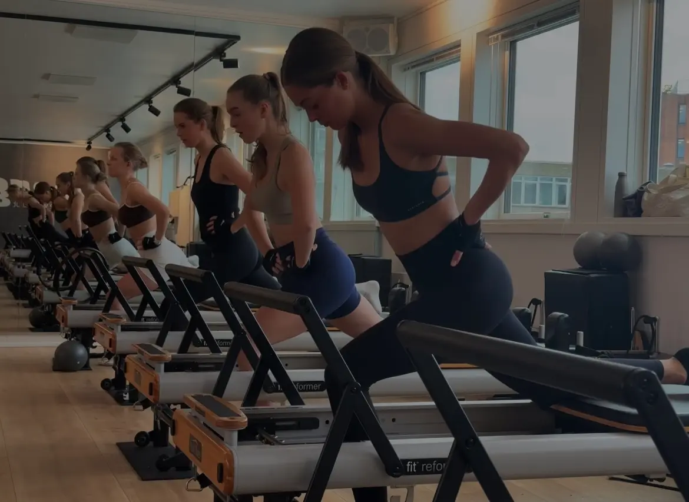

Elvira's flowzone
Elvira's flowzone
Elvira: Passioneret reformerinstruktør, der gør træning til en livsstil
Hos Elvira's flowzone møder du Elvira, en dedikeret reformerinstruktør, der lyser op, når hun taler om sit arbejde. Med en smittende energi og et varmt smil deler hun sin passion for reformertræning og, ikke mindst, hvordan hun hjælper sine klienter med at finde glæde i bevægelse. Det er tydeligt, at Elvira er en instruktør, der brænder for sit arbejde og for at gøre en forskel i andres liv.

Reformer hos Elvira



